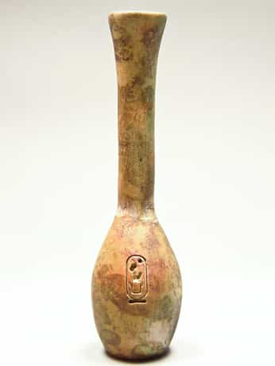

Mewling, sticking their butts in the air, rubbing on things. These are the typical signs of an animal in heat. Women are no different except they run a lucrative biological con game by pretending they’re always in heat.
Going into season every month makes human females unusual among animals, but they are only really fertile a few days each cycle. The other 90% of the time men are getting played. With most animals, it’s blatantly obvious when the female is ready to ovulate and she never lies. With humans, it’s nearly the opposite.
Cats, dogs, horses, rats, it doesn’t matter. When the female is ready to mate. Her back arches and her butt and genitals are put on prominent display for passing males. The formal name for this is the lordosis reflex. Human females do it too.
A few days of the month, her ass protrudes more than usual and the small of her back tightens inward, pushing out her boobs for fullest display. This is the posture that gives her that sexy walk that makes men slaver for her. The time is right and the man that has her may well spread his genes.
So imagine the attention she gets if she can fake it—every single day. Whether foot-binding in China, corsets in Victorian times, or high heels today, this has been one of the most popular forms of counterfeiting through the ages.
Around that right time of month, she exudes a subtle feminine scent bound to attract suitors from miles around. So naturally, she finds a way to simulate it every day so she can extract whatever she wants to the max by using perfume, which radiates the olfactory promise of sex. Perfumes, of course, have been part of her arsenal since at least the beginning of history.

Ancient Egyptian Perfume Bottle
As ovulation grows near, her face grows flushed, and her eyes and eyelids grow sultry, shadowy and dark. Even her eyelashes seem to somehow darken and swell.
As with the other signs, humans are hardly the only example:
With makeup she can make it look like she’s always about to drop an egg and even exaggerate an effect that would normally be subtle. The harder she’s trying to get things from men. The more makeup she uses.
Ancient Sumerian Makeup Kit
Right before that egg drops her lips flush valentine card crimson, plump up, and get that smooth, juicy, kissable look.
Thankfully, it’s easy for her to fake it with enough lipstick and lip gloss.
Women come programmed to play con games on men to manipulate them at their expense for the good of the species. She doesn’t have to be taught to use these tactics (at the minimum, she’s naturally receptive to being taught them). Otherwise, it’s hard to explain why these tactics would be so consistent across time and place.
The very existence of hidden ovulation tells us we’re biologically set up to be used. It’s not a bug but a feature, which makes men more similar to seahorse males that share in the costs of reproduction by actually carrying the babies himself—or male praying mantises that lose their lives to become baby food. Natural selection cares absolutely nothing for our individual interests or pleasure. Pleasure or pain is just a bait and whip to get us to perform our functions until we’ve outlived our usefulness to the species.
However, men are natural problem solvers. As individuals, many men don’t content themselves to let nature play out on autopilot. We try to manipulate fate in our favor and hack the system. Should we have been able to spread all over the planet and hunt woolly mammoths to extinction? Human intelligence allowed the species to move beyond its obvious preset plan.
We can become conscious of the underlying biological truths of our species and use this knowledge to maximize our own interests instead of living by instinct alone. If the most successful reproductive strategies grow more complex, with more work performed on the conscious level, the effect is necessarily eugenic. Becoming more aware and hacking the reproductive system is a service to the human species just as was learning to start fires or throw spears.
A good beginning is for men to understand how they are being manipulated. The first step in avoiding the trap is knowing of its existence.
Read More: Why High Heels Are Attractive On Women
{kind=link}
{kind=link}
{kind=link}
{kind=link}